Ao concluir este capítulo, o leitor deverá ser capaz de:
explicar o papel da visualização na análise e na comunicação científica;
distinguir gráficos exploratórios de gráficos explicativos;
identificar os principais componentes de um gráfico estatístico;
associar adequadamente variáveis a propriedades gráficas;
escolher representações gráficas de acordo com a questão biológica e a estrutura dos dados;
reconhecer visualizações enganosas ou ineficazes;
construir figuras científicas claras e informativas usando o R;
aprimorar figuras por meio do uso adequado de escalas, rótulos, símbolos e ênfase gráfica.
5.2 Por que visualizar dados?
Conjuntos de dados científicos frequentemente contêm padrões difíceis de reconhecer apenas por tabelas ou resumos numéricos. A visualização estabelece uma conexão direta entre os dados e a percepção humana, permitindo identificar distribuições, relações, variação, observações incomuns e padrões biológicos.
O Capítulo 4 mostrou que a análise exploratória depende fortemente de gráficos. Histogramas revelam assimetria e valores discrepantes, gráficos de dispersão revelam curvaturas e agrupamentos, e gráficos de linhas revelam como a doença se desenvolve ao longo do tempo. Os gráficos também são o principal meio de comunicar resultados: em artigos, teses, relatórios, apresentações e materiais de extensão, os leitores muitas vezes olham as figuras antes — e às vezes em vez — de ler o texto. Uma figura serve, portanto, a dois públicos: o pesquisador que tenta compreender os dados e o leitor que tenta avaliar a evidência.
Os dois usos exigem escolhas. Quais variáveis vão em qual eixo, se mostrar as observações individuais ou apenas resumos, como representar a incerteza e como usar as cores — tudo isso afeta o que o leitor vê e conclui. Este capítulo apresenta princípios para fazer essas escolhas de forma deliberada, para que as figuras revelem a evidência em vez de obscurecê-la ou distorcê-la.
Importante
Uma figura científica deve ajudar o leitor a ver a evidência, e não apenas enfeitar os resultados.
5.3 A visualização como parte do raciocínio científico
5.3.1 Vendo padrões nos dados
Os resumos numéricos condensam os dados em poucos números e, ao fazer isso, inevitavelmente descartam informação. Conjuntos de dados muito diferentes podem ter as mesmas médias, desvios padrão e correlações. A demonstração clássica é o quarteto de Anscombe: quatro pequenos conjuntos de dados com médias, variâncias, correlação e reta de regressão praticamente idênticas, dos quais um mostra uma relação linear, outro uma curva, outro uma reta perfeita distorcida por um único valor discrepante e outro nenhuma relação, exceto por um ponto extremo (Anscombe 1973).
O mesmo fenômeno ocorre na Fitopatologia. Imagine quatro ensaios de campo em que a severidade média da testemunha é 20% e seu desvio padrão é 8%. No primeiro ensaio, a severidade varia suavemente entre as parcelas. No segundo, a maioria das parcelas tem cerca de 15% de severidade e uma parcela tem 50%, talvez por estar ao lado de uma fonte de inóculo. No terceiro, as parcelas se dividem em dois grupos, 10% e 30%, correspondentes a dois tipos de solo. No quarto, a severidade aumenta continuamente de uma extremidade da lavoura à outra. Os resumos são idênticos; as histórias biológicas são completamente diferentes. Somente um gráfico das observações individuais revela qual história se aplica.
O quarteto de Anscombe está disponível no R base (objeto anscombe), e basta reorganizá-lo para vê-lo (Figura 5.1).
library(ggplot2)quarteto <-data.frame(conjunto =rep(paste("Conjunto", 1:4), each =11),x =c(anscombe$x1, anscombe$x2, anscombe$x3, anscombe$x4),y =c(anscombe$y1, anscombe$y2, anscombe$y3, anscombe$y4))ggplot(quarteto, aes(x, y)) +geom_smooth(method ="lm", formula = y ~ x, se =FALSE,colour ="grey60", linewidth =0.8) +geom_point(size =2.5, colour ="#0072B2") +facet_wrap(~ conjunto) +theme_bw(base_size =13)
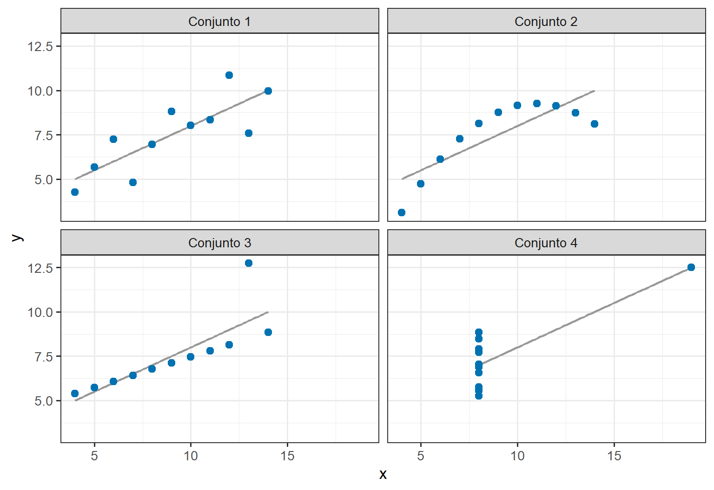
Figura 5.1: O quarteto de Anscombe: quatro conjuntos de dados com médias, variâncias, correlação (r ≈ 0,82) e reta de regressão praticamente idênticas, mas com padrões completamente diferentes.
5.3.2 Exploração e comunicação
A visualização serve a dois propósitos distintos. Gráficos exploratórios são feitos pelos pesquisadores para si mesmos, para compreender os dados: pesquisador → dados → compreensão. São produzidos rapidamente, em grande número, e descartados livremente. Seu objetivo é revelar tudo o que possa existir nos dados, inclusive erros e padrões inesperados.
Gráficos explicativos são feitos para outras pessoas, para comunicar um resultado: pesquisador → figura → leitor. São produzidos com cuidado e em pequeno número, e cada um é planejado para transmitir uma mensagem específica de forma clara e honesta. Seu objetivo é ajudar os leitores a ver e avaliar a evidência que sustenta uma conclusão.
Os dois tipos diferem no grau de acabamento, mas não na honestidade. Uma figura explicativa seleciona e enfatiza, mas não deve esconder características dos dados que sejam relevantes para a conclusão.
Figura 5.2: Dois papéis complementares da visualização científica: explorar os dados e comunicar a evidência.
5.3.3 Dos dados à evidência gráfica
Uma figura é uma representação dos dados, e não os dados em si. Toda figura resulta de decisões: quais observações incluir, se mostrar valores individuais ou resumos, quais comparações colocar lado a lado, que escala usar e o que enfatizar com cor ou posição. Cada decisão torna algumas características dos dados mais fáceis de ver e outras mais difíceis.
Não existe figura neutra. Por isso, a pergunta a fazer não é se uma figura envolve escolhas, mas se essas escolhas são orientadas pela questão científica e se representam a evidência de forma justa. O restante deste capítulo discute como fazer bem essas escolhas.
5.4 A anatomia de um gráfico estatístico
Gráficos estatísticos podem parecer muito diferentes entre si, mas são construídos a partir dos mesmos componentes. Essa ideia, formalizada como gramática dos gráficos(Wickham 2010; Wilkinson 2005), fornece uma forma sistemática de descrever, planejar e construir qualquer gráfico.
5.4.1 Dados
Todo gráfico começa com um conjunto de dados. A organização descrita no Capítulo 3, com uma linha por observação e uma coluna por variável, é a entrada natural para os gráficos: cada linha se torna um elemento gráfico (um ponto, uma barra, um segmento de linha), e cada variável pode ser associada a uma propriedade visual.
5.4.2 Mapeamentos gráficos
Um mapeamento, também chamado mapeamento estético, associa uma variável a uma propriedade visual: severidade à posição vertical, tratamento à posição horizontal, cultivar à cor, ano ao formato. Os mapeamentos são as decisões centrais no planejamento de um gráfico, porque determinam quais comparações o leitor consegue fazer com facilidade.
5.4.3 Representações geométricas
As geometrias são as marcas usadas para representar as observações: pontos, linhas, barras, caixas, áreas ou texto. O mesmo mapeamento pode ser desenhado com geometrias diferentes. A severidade por tratamento pode ser mostrada com pontos, diagramas de caixa ou barras, e cada opção enfatiza características diferentes dos dados.
5.4.4 Escalas
As escalas traduzem os valores dos dados em valores visuais: severidade de 0 a 100% em posições verticais, cultivares em cores, número de esporos em tamanhos de pontos. As escalas também produzem os guias que permitem ao leitor fazer a tradução inversa: eixos e legendas. As escolhas sobre escalas incluem seus limites, marcações e transformações, como escalas logarítmicas.
5.4.5 Sistemas de coordenadas
O sistema de coordenadas define o espaço em que o gráfico é desenhado. A maioria dos gráficos científicos usa coordenadas cartesianas, com eixos horizontal e vertical perpendiculares. Outros sistemas incluem as coordenadas polares (usadas em gráficos de setores e gráficos circulares) e as projeções geográficas (usadas em mapas).
5.4.6 Rótulos e anotações
Rótulos e anotações tornam o gráfico interpretável: títulos dos eixos com unidades, títulos das legendas, rótulos dos painéis, linhas de referência (como um limiar econômico) e texto destacando observações específicas. Eles ligam a representação gráfica de volta ao significado biológico.
Figura 5.3: Principais componentes de um gráfico estatístico, segundo a gramática dos gráficos.
5.5 Associando variáveis a propriedades visuais
As propriedades visuais não são igualmente eficazes para transmitir informação quantitativa. Pesquisas sobre percepção gráfica mostraram que as pessoas julgam algumas propriedades visuais com mais precisão do que outras (Cleveland e McGill 1984). A escolha de qual variável associar a qual propriedade deve, portanto, refletir quais comparações são mais importantes.
5.5.1 Posição
A posição ao longo de uma escala comum é a propriedade visual percebida com mais precisão. Os leitores conseguem comparar com grande precisão as alturas de pontos alinhados no mesmo eixo. Por isso, a comparação mais importante de uma figura deve ser representada pela posição, geralmente no eixo vertical.
5.5.2 Comprimento
O comprimento, como nos gráficos de barras, também é julgado com precisão, desde que as barras partam de uma linha de base comum, geralmente zero. Comprimentos que não começam em zero, ou que não estão alinhados, são comparados com muito menos precisão.
5.5.3 Tamanho
O tamanho, como a área dos pontos, é percebido com menos precisão do que a posição ou o comprimento. Os leitores tendem a subestimar diferenças de área. O tamanho é útil para representar uma variável secundária, como o número de observações por trás de cada ponto, mas não para comparações precisas.
5.5.4 Formato
O formato é adequado para distinguir um pequeno número de categorias, como anos ou locais. Ele não transmite quantidade, e mais de quatro ou cinco formatos tornam-se difíceis de distinguir.
5.5.5 Cor
A cor pode representar categorias (matiz) ou quantidades (luminosidade e saturação). O matiz é eficaz para distinguir poucos grupos; a intensidade da cor transmite apenas magnitudes aproximadas. A cor é discutida em detalhe mais adiante neste capítulo.
5.5.6 Transparência
A transparência é usada principalmente para lidar com observações sobrepostas. Quando muitos pontos caem uns sobre os outros, pontos semitransparentes revelam onde as observações se concentram. A transparência também pode atenuar informações de fundo, como as observações individuais por trás das médias dos grupos.
Tabela 5.1: Propriedades visuais e seus usos típicos.
Propriedade visual
Melhor uso
Precisão para comparação quantitativa
Posição em escala comum
Comparação quantitativa principal
Máxima
Comprimento a partir de base comum
Contagens, totais, quantidades
Alta
Tamanho (área)
Quantidades secundárias
Baixa
Intensidade da cor
Magnitudes aproximadas, mapas de calor
Baixa
Matiz da cor
Poucas categorias
Não quantitativa
Formato
Poucas categorias
Não quantitativa
Transparência
Pontos sobrepostos, atenuação
Não quantitativa
A Figura 5.4 mostra os mesmos cinco valores representados por quatro propriedades visuais diferentes. Na posição, as diferenças são lidas com facilidade; na área e na intensidade da cor, mesmo diferenças grandes parecem pequenas e imprecisas.
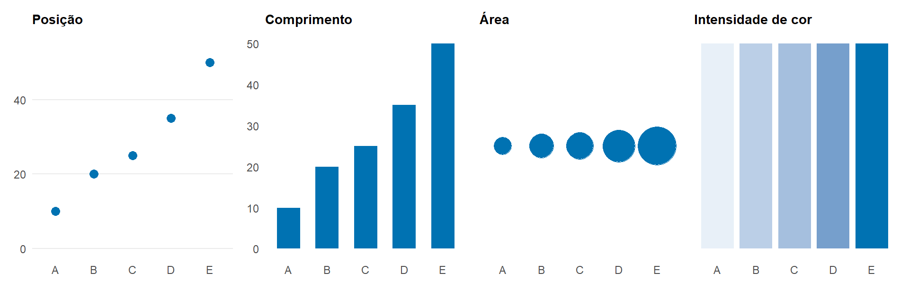
Figura 5.4: Os mesmos cinco valores (severidade de 10, 20, 25, 35 e 50%) representados por posição, comprimento, área e intensidade de cor. A precisão com que o leitor compara os valores diminui da esquerda para a direita.
Dica
Sempre que a comparação quantitativa precisa for importante, prefira propriedades visuais que os leitores interpretam com precisão, especialmente a posição ao longo de uma escala comum.
5.6 Escolhendo um gráfico
A representação gráfica adequada depende principalmente da questão biológica e das variáveis representadas.
5.6.1 Mostrando distribuições
A distribuição de uma única variável quantitativa é mostrada com histogramas, gráficos de densidade, diagramas de caixa, gráficos de violino ou gráficos das observações brutas. Os histogramas dividem a amplitude em intervalos e contam as observações em cada um; sua aparência depende da largura dos intervalos, que deve ser escolhida com cuidado. Os gráficos de densidade mostram uma versão suavizada da distribuição. Os diagramas de caixa resumem a distribuição com a mediana, os quartis e os possíveis valores discrepantes, e são compactos o suficiente para comparar muitos grupos. Os gráficos de violino combinam a compacidade do diagrama de caixa com a forma do gráfico de densidade. Quando o número de observações é pequeno, como na maioria dos experimentos planejados, as próprias observações, mostradas em um gráfico de pontos, costumam ser a representação mais informativa.
5.6.2 Comparando grupos
Comparar uma resposta quantitativa entre tratamentos, cultivares ou isolados é a tarefa mais comum nas figuras de Fitopatologia. Gráficos de pontos mostrando todas as observações, diagramas de caixa e gráficos de médias com intervalos são todos eficazes. Gráficos de barras de médias são comuns, mas muitas vezes inadequados para respostas contínuas: mostram um único número por grupo, escondem a distribuição e o número de observações e sugerem que valores abaixo do topo da barra foram observados. A comparação entre grupos deve estar em um eixo comum, e os grupos devem estar ordenados de forma significativa.
5.6.3 Mostrando relações
A relação entre duas variáveis quantitativas, como severidade e produtividade ou temperatura e crescimento da lesão, é mostrada com um gráfico de dispersão. Variáveis adicionais podem ser mostradas por cor, formato ou painéis separados. Linhas ou curvas ajustadas podem ser acrescentadas, mas na etapa exploratória os próprios pontos são mais importantes do que qualquer linha-resumo.
5.6.4 Mostrando mudanças ao longo do tempo
Mudanças ao longo do tempo são mostradas com gráficos de linhas, em que o tempo fica no eixo horizontal e as observações da mesma unidade são ligadas. Curvas de progresso da doença, dinâmica de populações de patógenos e séries ambientais como temperatura, chuva e molhamento foliar são exemplos típicos. As linhas devem ligar observações apenas quando pertencem à mesma unidade ou grupo e quando os valores intermediários têm significado.
5.6.5 Mostrando proporções e frequências
Contagens e proporções de desfechos categóricos, como o número de lavouras em que um patógeno foi detectado ou a proporção de isolados resistentes a um fungicida, são mais bem mostradas com gráficos de barras, em que o comprimento da barra a partir do zero representa a contagem ou a proporção. Barras empilhadas mostram a composição dos grupos, mas dificultam a comparação de todos os segmentos exceto o de baixo. Gráficos de setores (“pizza”) representam proporções como ângulos e áreas, que são julgados com menos precisão do que comprimentos; raramente são a melhor escolha em figuras científicas.
5.6.6 Mostrando a incerteza
Estimativas como médias ou efeitos de tratamentos devem ser acompanhadas de uma representação de sua incerteza, normalmente um intervalo de confiança desenhado como uma linha em torno de um ponto. Sempre que possível, a incerteza deve ser mostrada junto com as observações, para que os leitores vejam tanto a variabilidade dos dados quanto a precisão das estimativas. Essas representações são discutidas em mais detalhe adiante.
Tabela 5.2: Relacionando questões científicas a abordagens gráficas comuns.
Questão científica
Abordagem gráfica típica
Como uma variável está distribuída?
Histograma, gráfico de densidade, diagrama de caixa
Como os grupos diferem?
Gráfico de pontos, diagrama de caixa, gráfico de intervalos
Duas variáveis quantitativas estão relacionadas?
Gráfico de dispersão
Como uma resposta muda ao longo do tempo?
Gráfico de linhas
Qual a frequência de diferentes categorias?
Gráfico de barras
Quão incerta é uma estimativa?
Gráfico de pontos e intervalos
A Figura 5.5 reúne exemplos dessas representações, todos construídos com o mesmo conjunto de dados simulados de um ensaio de fungicidas. O código de cada painel segue o padrão apresentado na seção sobre o ggplot2, mais adiante.
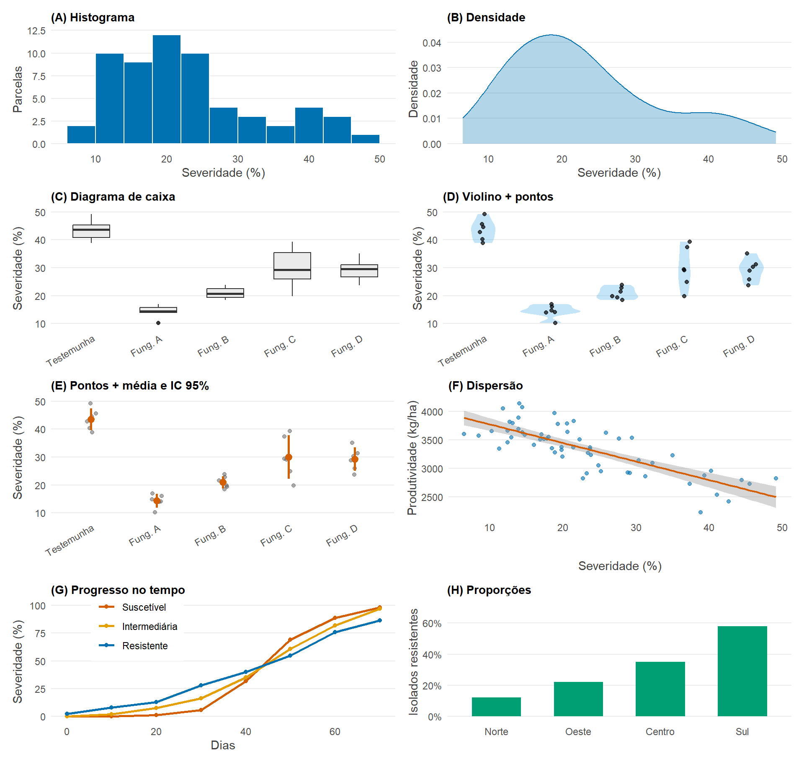
Figura 5.5: Galeria de gráficos comuns em Fitopatologia (dados simulados). Distribuições: (A) histograma, (B) densidade, (C) diagrama de caixa e (D) violino com pontos. Comparação de grupos: (E) observações com média e IC 95%. Relações: (F) dispersão com reta ajustada. Tempo: (G) curvas de progresso. Proporções: (H) barras de proporção.
5.7 Mostre os dados sempre que possível
5.7.1 Observações brutas
A maioria dos experimentos em Fitopatologia tem um número modesto de unidades experimentais por tratamento, muitas vezes entre quatro e vinte. Com tão poucas observações, não há motivo para escondê-las. Mostrar cada observação permite ao leitor ver o número de repetições, a dispersão dos dados, valores incomuns e se as estatísticas-resumo representam bem os dados. Quando as observações se sobrepõem, podem ser espalhadas horizontalmente com um pequeno deslocamento aleatório (jitter) ou tornadas semitransparentes.
5.7.2 Estatísticas-resumo
Estatísticas-resumo, como médias ou medianas, ajudam o leitor a se concentrar na comparação de interesse. São mais bem mostradas sobre as observações, com um estilo visual distinto, como um ponto maior ou uma linha horizontal, para que os dois níveis de informação fiquem visíveis.
5.7.3 Distribuição e variação
Um tipo comum de figura mostra as médias dos tratamentos como barras com barras de erro padrão. Essa representação esconde quase tudo sobre os dados: o número de observações, sua distribuição, valores discrepantes e se a distribuição é assimétrica ou bimodal. Conjuntos de dados muito diferentes podem produzir barras idênticas (Weissgerber et al. 2015). Uma alternativa mais informativa mostra as observações individuais, as médias dos tratamentos e os intervalos de confiança. Com o mesmo espaço e a mesma tinta, ela revela os dados e a incerteza das estimativas.
library(ggplot2)# Convencional: barras e erros padrãoggplot(data, aes(x = treatment, y = severity)) +stat_summary(fun = mean, geom ="col") +stat_summary(fun.data = mean_se, geom ="errorbar", width =0.2)# Melhor: observações, médias e intervalos de confiança de 95%ggplot(data, aes(x = treatment, y = severity)) +geom_jitter(width =0.1, alpha =0.5) +stat_summary(fun.data = mean_cl_normal, color ="red")
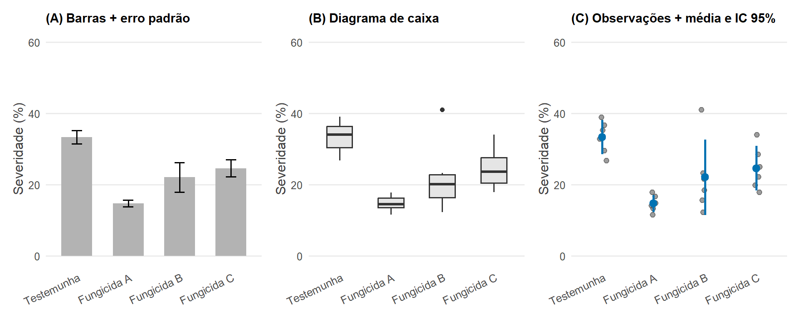
Figura 5.6: Diferentes representações gráficas dos mesmos dados experimentais (dados simulados; seis parcelas por tratamento). (A) Barras com erro padrão mostram apenas a média e sua precisão. (B) Diagramas de caixa mostram a distribuição, mas com poucas observações escondem quantas são. (C) Observações individuais com a média e o intervalo de confiança de 95% revelam os dados e a incerteza, incluindo a parcela discrepante do Fungicida B e a maior variabilidade da testemunha.
Importante
As estatísticas-resumo não devem esconder desnecessariamente as observações a partir das quais foram calculadas.
5.8 Representando a incerteza
5.8.1 Variabilidade versus incerteza
Dois conceitos diferentes são frequentemente confundidos nas figuras. A variabilidade descreve o quanto as observações individuais diferem entre si; é uma propriedade dos dados e é resumida pelo desvio padrão ou pela amplitude. A incerteza descreve com que precisão uma grandeza, como a média de um tratamento, foi estimada; é resumida pelo erro padrão ou por um intervalo de confiança. A variabilidade não diminui à medida que mais observações são coletadas; a incerteza, sim. Os fundamentos estatísticos desses conceitos são apresentados no Capítulo 6. Para os gráficos, o ponto-chave é que o leitor precisa saber qual dos dois está sendo mostrado.
5.8.2 Barras de erro
As barras de erro podem representar o desvio padrão, o erro padrão, um intervalo de confiança ou a amplitude. Essas alternativas podem diferir muito em comprimento: o erro padrão é menor que o desvio padrão por um fator igual à raiz quadrada do tamanho da amostra. Barras de erro sem a indicação do que representam são ininterpretáveis. Toda figura com barras de erro deve informar na legenda o que elas mostram e em quantas observações cada uma se baseia.
5.8.3 Intervalos de confiança
Um intervalo de confiança mostra uma faixa de valores para a grandeza estimada que são compatíveis com os dados, dado o modelo. Os intervalos de confiança são, em geral, a representação mais útil da incerteza para estimativas como médias, diferenças entre tratamentos ou inclinações, porque sua largura reflete diretamente a precisão da estimativa nas unidades da resposta.
5.8.4 Intervalos de predição
Um intervalo de predição mostra a faixa em que se espera que uma nova observação individual caia. Ele é sempre mais largo do que o intervalo de confiança da média, porque inclui tanto a incerteza da estimativa quanto a variabilidade das observações individuais. Os intervalos de predição são relevantes quando o objetivo é prever, por exemplo, o nível de doença esperado em uma nova lavoura sob determinadas condições (Capítulo 8).
5.8.5 Quando a incerteza deve ser mostrada
A incerteza deve ser mostrada sempre que uma figura sustenta uma conclusão sobre estimativas, como diferenças entre tratamentos, efeitos ou relações ajustadas. Pode ser omitida em gráficos puramente descritivos dos dados brutos, em que as próprias observações mostram a variabilidade. Em todos os casos, a representação deve corresponder à comparação de interesse: se a conclusão é sobre a diferença entre dois tratamentos, a incerteza dessa diferença é mais relevante do que a incerteza de cada média separadamente.
Tabela 5.3: Representações comuns de variabilidade e incerteza.
Representação
O que descreve
Diminui com mais observações?
Desvio padrão
Variabilidade entre observações
Não
Erro padrão
Precisão de uma média estimada
Sim
Intervalo de confiança
Faixa de valores compatíveis com os dados para uma estimativa
Sim
Intervalo de predição
Faixa esperada para uma nova observação
Só em parte
5.9 Cor em gráficos científicos
5.9.1 A cor como informação
A cor é poderosa: atrai a atenção e distingue grupos instantaneamente. Pelo mesmo motivo, deve ser usada de forma deliberada. Em gráficos científicos, a cor deve codificar uma variável ou direcionar a atenção para a mensagem principal. O tipo de paleta deve corresponder ao tipo de variável.
5.9.2 Paletas sequenciais
Paletas sequenciais variam gradualmente do claro ao escuro (ou de baixa a alta saturação) e representam quantidades ordenadas que vão de baixo a alto: severidade da doença em um mapa, concentração de DNA do patógeno, chuva. Cores mais claras costumam representar valores menores, e cores mais escuras, valores maiores.
5.9.3 Paletas divergentes
Paletas divergentes usam dois matizes contrastantes que divergem a partir de um ponto central neutro. Representam quantidades com um centro significativo, como mudança zero, uma cultivar de referência ou correlação zero. Exemplos incluem mudanças na doença em relação a uma testemunha, anomalias de temperatura e matrizes de correlação.
5.9.4 Paletas qualitativas
Paletas qualitativas usam matizes distintos de luminosidade semelhante para representar categorias sem ordem, como cultivares, isolados ou locais. Não devem sugerir uma ordem inexistente e funcionam bem apenas para um número limitado de categorias, geralmente não mais que seis a oito.
5.9.5 Acessibilidade das cores
Cerca de 8% dos homens e 0,5% das mulheres têm alguma forma de deficiência na visão de cores, mais comumente dificuldade em distinguir vermelho e verde. Paletas vermelho–verde, infelizmente comuns em figuras de doença e sanidade, são portanto inacessíveis para uma parte considerável do público. Devem ser preferidas paletas projetadas para daltonismo, como a família viridis ou a paleta de Okabe–Ito. Distinções essenciais não devem depender exclusivamente da cor: combinar cor com formato, tipo de linha, rótulos diretos ou posição garante que as figuras continuem interpretáveis em impressão em tons de cinza e para todos os leitores.
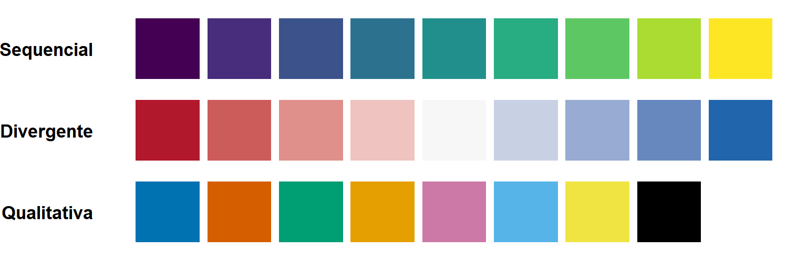
Figura 5.7: Os três tipos de paleta. Sequencial (viridis): quantidades de baixo a alto. Divergente: desvios em torno de um centro com significado, como zero. Qualitativa (Okabe–Ito): categorias sem ordem; é segura para pessoas com deficiência na visão de cores.
O código abaixo aplica uma paleta acessível às curvas de progresso de três cultivares e combina cor com formato dos pontos, para que as curvas continuem distinguíveis mesmo sem cor.
ggplot(progresso, aes(x = dias, y = severity,color = cultivar, shape = cultivar)) +geom_line(linewidth =0.9) +geom_point(size =2.5) +scale_color_viridis_d(end =0.85) +labs(x ="Dias após a semeadura", y ="Severidade (%)",color ="Cultivar", shape ="Cultivar") +theme_bw(base_size =13)
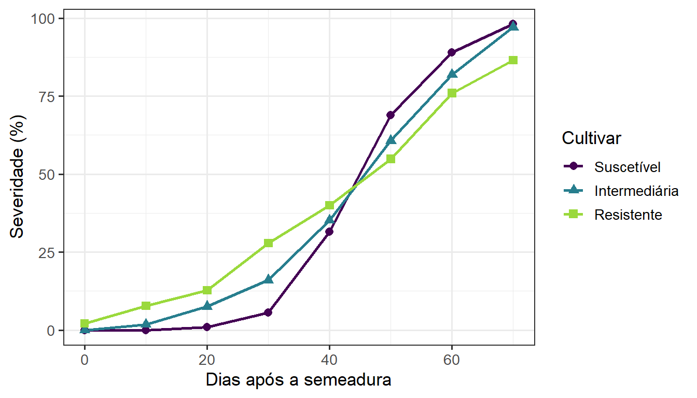
Figura 5.8: Curvas de progresso da doença (dados simulados) com a paleta viridis e formatos diferentes para cada cultivar.
5.9.6 Quando não usar cor
A cor é desnecessária quando duplica informação já mostrada pela posição, como quando cada barra de um gráfico de barras recebe uma cor diferente embora as categorias já estejam rotuladas no eixo. A cor decorativa distrai e pode sugerir agrupamentos inexistentes. Usar uma única cor neutra para a maioria dos elementos e uma cor contrastante apenas para os elementos que carregam a mensagem é, muitas vezes, a estratégia mais eficaz.
Dica
A cor deve codificar informação ou direcionar a atenção. Se remover uma cor não muda a interpretação da figura, ela talvez não seja necessária.
5.10 Rótulos, escalas e eixos
5.10.1 Rótulos informativos nos eixos
Os rótulos dos eixos devem descrever a variável com palavras que o leitor entende, e não com as abreviações usadas no conjunto de dados. sev_pct e dap fazem sentido para quem analisa; “Severidade da doença (%)” e “Dias após a semeadura” fazem sentido para o leitor.
5.10.2 Unidades de medida
Todo eixo que representa uma grandeza medida deve incluir sua unidade, geralmente entre parênteses: comprimento da lesão (mm), produtividade (kg/ha), temperatura (°C). As unidades de grandezas derivadas, como taxas ou razões, merecem atenção especial.
5.10.3 Limites dos eixos
Os limites dos eixos determinam o tamanho aparente das diferenças. Em gráficos de barras, o eixo deve começar em zero, porque o comprimento da barra representa a magnitude. Em gráficos de pontos, de linhas e de dispersão, o eixo não precisa incluir o zero, e começar em outro valor pode revelar variação relevante. Truncar um eixo, porém, pode exagerar diferenças pequenas, e a escolha deve refletir qual tamanho de diferença é biologicamente relevante. Para variáveis limitadas, como porcentagens, mostrar a faixa completa de 0 a 100% pode ajudar o leitor a julgar a magnitude das diferenças (Figura 5.9).
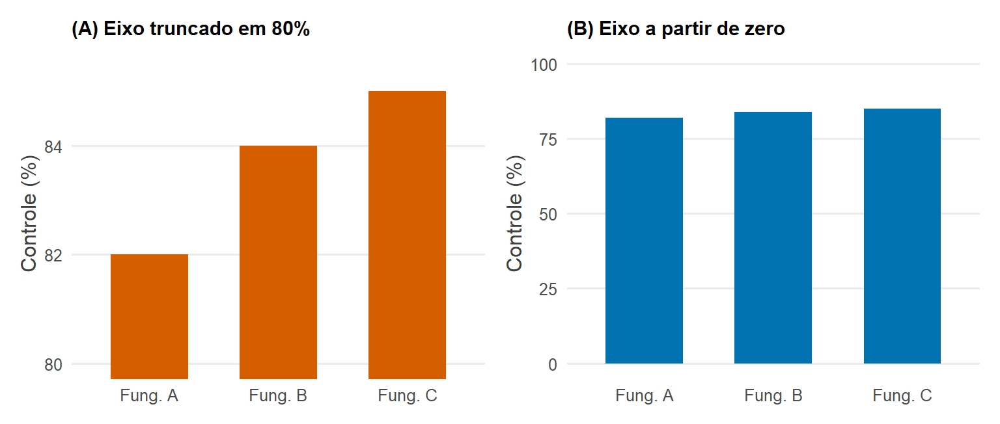
Figura 5.9: O efeito de truncar o eixo de um gráfico de barras. Os dados são os mesmos nos dois painéis (controle de 82, 84 e 85% por três fungicidas). Com o eixo começando em 80% (A), uma diferença de 3 pontos percentuais parece enorme; com o eixo começando em zero (B), ela aparece na proporção correta.
5.10.4 Transformações
Quando os valores abrangem várias ordens de grandeza, como contagens de esporos, quantidades de DNA do patógeno ou valores de CE50 de fungicidas, uma escala logarítmica espalha os dados e torna visíveis as diferenças relativas. Os rótulos do eixo devem então mostrar os valores na escala original (1, 10, 100, 1000), e não os logaritmos, para que o leitor possa interpretá-los diretamente.
Figura 5.10: Valores de CE50 de 15 isolados (dados simulados) em escala logarítmica. Os rótulos do eixo mostram os valores originais, e as diferenças relativas entre isolados sensíveis e menos sensíveis ficam visíveis.
5.10.5 Ordenando categorias
Os programas costumam ordenar as categorias alfabeticamente, o que raramente corresponde a algo significativo. As categorias devem ser ordenadas de forma que ajude a comparação: tratamentos em uma sequência lógica (testemunha primeiro, depois doses crescentes), cultivares segundo sua resposta (da menos à mais doente), meses em ordem cronológica. Ordenar pela resposta torna os ranqueamentos imediatamente visíveis.
pA <-ggplot(notas_cv, aes(x = cultivar, y = severity)) +geom_point(colour ="grey40") +labs(title ="(A) Ordem alfabética", x =NULL, y ="Severidade (%)")pB <-ggplot(notas_cv, aes(x =reorder(cultivar, severity), y = severity)) +geom_point(colour ="#0072B2") +labs(title ="(B) Ordenado pela resposta", x =NULL, y ="Severidade (%)")pA + pB &theme_bw(base_size =12)
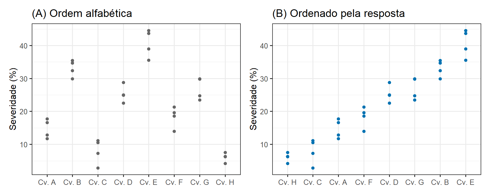
Figura 5.11: Severidade em oito cultivares (dados simulados). (A) Ordem alfabética, o padrão do R. (B) Cultivares ordenadas pela severidade média com reorder(): o ranqueamento fica imediatamente visível.
5.10.6 Legendas
As legendas obrigam o leitor a olhar alternadamente para a legenda e para os dados. Quando possível, rotular os grupos diretamente no gráfico, no fim das linhas ou ao lado das nuvens de pontos, facilita a leitura. Quando uma legenda é necessária, ela deve ter um título informativo, listar as categorias na mesma ordem em que aparecem no gráfico e ficar perto dos dados.
5.11 Múltiplas variáveis e múltiplos painéis
5.11.1 Variáveis de agrupamento
Muitas questões envolvem mais de duas variáveis. Uma terceira variável pode ser acrescentada associando-a à cor, ao formato ou ao tipo de linha, de modo que os grupos sejam comparados no mesmo painel. Isso funciona bem quando há poucos grupos e quando a comparação direta entre eles é o objetivo principal, como ao comparar as curvas de progresso da doença de três cultivares.
5.11.2 Facetas
As facetas dividem os dados em subconjuntos e desenham o mesmo gráfico para cada um em painéis separados. São preferíveis ao agrupamento quando há muitos grupos, quando os grupos se sobrepõem muito ou quando cada grupo deve ser examinado isoladamente. Os painéis devem compartilhar as mesmas escalas nos eixos, a menos que haja um bom motivo para não fazê-lo, para que os valores possam ser comparados entre painéis.
5.11.3 Pequenos múltiplos
Uma série de painéis com estrutura idêntica, cada um mostrando um subconjunto diferente, é chamada de conjunto de pequenos múltiplos (small multiples) (Tufte 2001). Como o leitor aprende a ler um painel, todos os outros podem ser lidos imediatamente, e a atenção pode se concentrar nas diferenças entre eles. Os pequenos múltiplos estão entre as formas mais eficazes de mostrar conjuntos de dados complexos.
5.11.4 Comparando ambientes
Os dados de Fitopatologia frequentemente vêm de vários locais, safras ou condições ambientais. Mostrar cada ambiente em seu próprio painel, como curvas de progresso da doença para cada local ou relações severidade–produtividade para cada ano, revela se os padrões são consistentes entre ambientes ou mudam com eles, o que muitas vezes é a questão central.
5.11.5 Comparando experimentos
Quando um experimento é repetido, os resultados de cada execução podem ser mostrados em painéis separados ou lado a lado no mesmo painel. Essas figuras mostram se os efeitos dos tratamentos são consistentes entre experimentos, o que é essencial para avaliar a generalidade das conclusões (Capítulo 2). Exemplos típicos incluem respostas cultivar × doença entre experimentos, comparações tratamento × ano em ensaios de fungicidas e curvas de progresso da doença × ambiente.
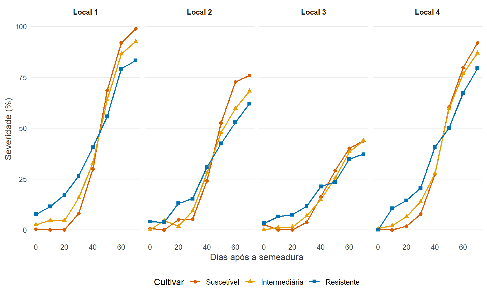
Figura 5.12: Pequenos múltiplos permitem comparar conjuntos de dados complexos usando estruturas gráficas repetidas. Curvas de progresso da doença (dados simulados) de três cultivares em quatro locais: todos os painéis compartilham as mesmas escalas, de modo que diferenças entre locais e entre cultivares podem ser comparadas diretamente.
5.12 Construindo gráficos com o ggplot2
5.12.1 A gramática dos gráficos
O pacote ggplot2 do R implementa a gramática dos gráficos descrita no início deste capítulo (Wickham 2016). Um gráfico é construído especificando os dados, associando variáveis às estéticas e acrescentando camadas de geometrias, escalas, facetas, rótulos e temas. Todo gráfico segue o mesmo modelo básico:
library(ggplot2)ggplot(data, aes(x = x_variable, y = y_variable)) +geom_point()
Os exemplos a seguir usam o conjunto de dados simulado ensaio: um ensaio de fungicidas com uma testemunha e quatro programas de fungicida, seis blocos e dois ambientes. Ele está organizado no formato descrito no Capítulo 3, com uma linha por parcela:
Cada passo abaixo acrescenta um componente ao gráfico, e o resultado aparece logo após o código.
5.12.2 Dados e estéticas
A função ggplot() recebe o conjunto de dados e os mapeamentos estéticos, definidos com aes(). O código abaixo associa o tratamento ao eixo horizontal e a severidade ao eixo vertical. Sozinho, ele produz um painel vazio com eixos, porque nenhuma geometria foi especificada ainda.
ggplot(ensaio, aes(x = treatment, y = severity))
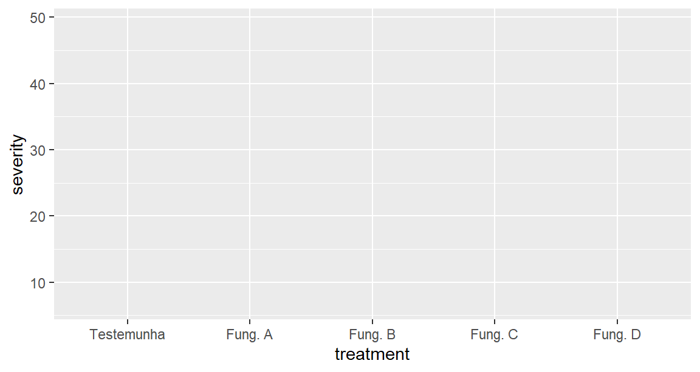
5.12.3 Geometrias
As geometrias são acrescentadas com funções que começam com geom_: geom_point() para pontos, geom_line() para linhas, geom_boxplot() para diagramas de caixa, geom_histogram() para histogramas e geom_col() para barras. Trocar uma geometria por outra muda a representação, mantendo o mesmo mapeamento.
ggplot(ensaio, aes(x = treatment, y = severity)) +geom_point()
Com 12 parcelas por tratamento, vários pontos se sobrepõem. Trocar geom_point() por geom_jitter() espalha os pontos horizontalmente, e a transparência (alpha) mostra onde eles se acumulam:
Com o mesmo mapeamento, geom_boxplot() resume a distribuição de cada tratamento:
ggplot(ensaio, aes(x = treatment, y = severity)) +geom_boxplot()
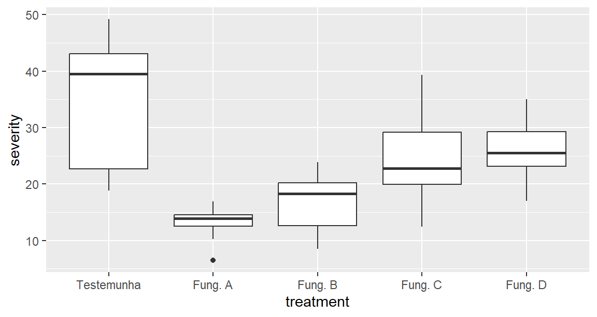
5.12.4 Acrescentando camadas
Os gráficos são construídos acrescentando camadas com o operador +. Cada camada pode mostrar um aspecto diferente dos dados. Aqui, uma camada de resumos é acrescentada sobre as observações. Por padrão, stat_summary() mostra a média e seu erro padrão; os argumentos colour e size a distinguem visualmente das observações.
As facetas são acrescentadas com facet_wrap() ou facet_grid(), que dividem os dados por uma ou duas variáveis e desenham um painel para cada subconjunto. Aqui, cada ambiente aparece em seu próprio painel, com a mesma escala vertical:
Os títulos dos eixos, das legendas e as legendas da figura são definidos com labs(). Os temas controlam os elementos do gráfico que não são dados, como o fundo, as linhas de grade e o tamanho da fonte. Um tema limpo, como theme_bw() ou theme_classic(), e um tamanho de fonte maior costumam bastar para figuras científicas. Os temas são secundários em relação às decisões sobre dados, mapeamentos e geometrias: um gráfico bem planejado com o tema padrão comunica melhor do que um gráfico mal planejado com um tema elaborado.
ggplot(ensaio, aes(x = treatment, y = severity)) +geom_jitter(width =0.15, alpha =0.4) +stat_summary(colour ="#D55E00", size =0.5) +facet_wrap(~ environment) +labs(x ="Programa de fungicida", y ="Severidade da doença (%)") +theme_bw(base_size =14) +theme(axis.text.x =element_text(angle =30, hjust =1))
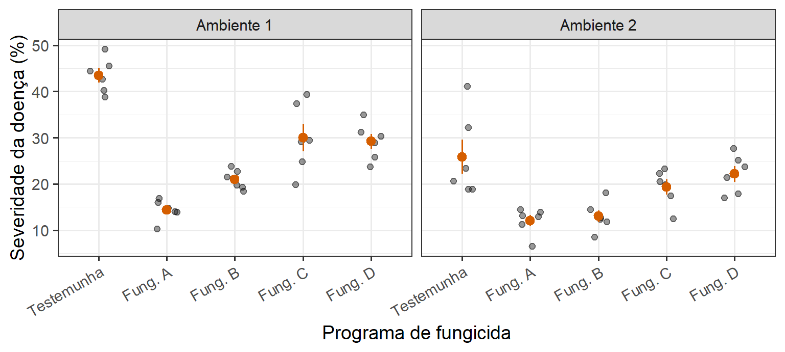
5.12.7 Juntando tudo
Os mesmos componentes servem para qualquer tipo de gráfico. O exemplo abaixo relaciona a produtividade à severidade da doença, com uma cor por ambiente, uma reta ajustada para cada um e rótulos completos:
ggplot(ensaio, aes(x = severity, y = yield, colour = environment)) +geom_point(alpha =0.7, size =2) +geom_smooth(method ="lm", formula = y ~ x, se =FALSE) +scale_colour_manual(values =c("#0072B2", "#E69F00")) +labs(x ="Severidade da doença (%)", y ="Produtividade (kg/ha)",colour =NULL) +theme_bw(base_size =13) +theme(legend.position ="top")
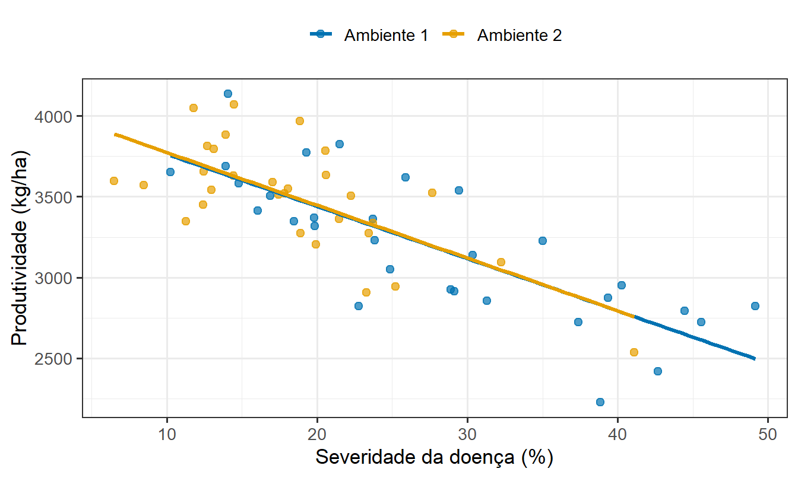
Nota
O objetivo não é memorizar funções do ggplot2. A gramática dos gráficos fornece uma forma sistemática de traduzir variáveis e questões científicas em representações gráficas.
5.13 Problemas comuns em figuras científicas
Muitas fragilidades das figuras científicas não são erros nos dados, mas más escolhas gráficas. Os problemas a seguir são frequentes em publicações de Fitopatologia.
5.13.1 Gráficos de barras que escondem os dados
Barras com erros padrão resumem cada grupo com dois números e escondem as observações. São adequadas para contagens e proporções, mas, para respostas contínuas como severidade, tamanho de lesão ou produtividade, gráficos de pontos ou diagramas de caixa com as observações são quase sempre mais informativos.
5.13.2 Uso inadequado de gráficos tridimensionais
Gráficos de barras e de setores tridimensionais acrescentam profundidade sem acrescentar informação. A perspectiva distorce o tamanho aparente dos elementos, tornando os valores mais difíceis de ler e comparar. A menos que a terceira dimensão represente uma variável real e possa ser lida com precisão, os gráficos devem ser bidimensionais.
5.13.3 Decoração excessiva
Linhas de grade pesadas, fundos sombreados, bordas, sombras, degradês e ilustrações competem com os dados pela atenção. Cada elemento de uma figura deve ter uma função. Remover elementos que não carregam informação geralmente faz os dados se destacarem.
5.13.4 Cores demais
Figuras com muitas cores são difíceis de decodificar, especialmente quando a legenda precisa ser consultada repetidamente. Quando é preciso distinguir mais de seis a oito categorias, facetas, rótulos diretos ou o destaque de alguns grupos de interesse são opções melhores.
5.13.5 Escalas mal escolhidas
Escalas lineares para dados que abrangem várias ordens de grandeza comprimem a maioria das observações em um canto do gráfico. Escalas que se estendem muito além dos dados desperdiçam espaço e achatam as diferenças. As escalas devem ser escolhidas para mostrar claramente a amplitude e a variação dos dados.
5.13.6 Escalas inconsistentes entre painéis
Quando os painéis usam faixas diferentes nos eixos, os leitores tendem a compará-los como se as escalas fossem iguais, e as diferenças de magnitude são mal interpretadas. Painéis que devem ser comparados devem compartilhar a mesma escala. Se escalas diferentes forem necessárias, isso deve ser informado com clareza.
5.13.7 Observações sobrepostas
Quando muitas observações têm valores iguais ou semelhantes, como é comum em avaliações visuais de severidade, os pontos se sobrepõem e o gráfico sugere menos observações do que realmente existem. Deslocamento aleatório (jitter), transparência ou gráficos que mostram contagens ajudam a revelar todas as observações (Figura 5.13).
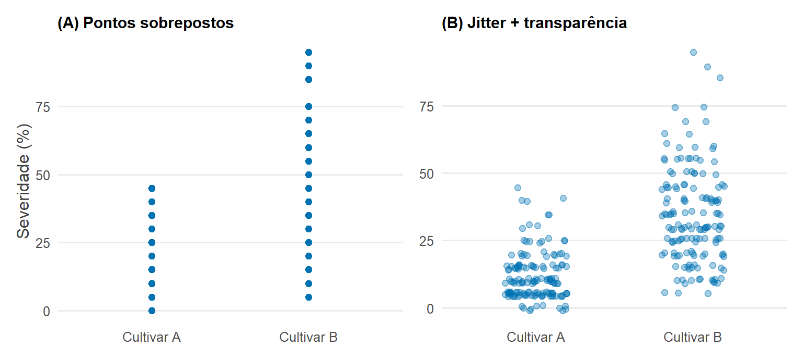
Figura 5.13: Observações sobrepostas (dados simulados). Notas visuais de severidade arredondadas para múltiplos de 5% em 300 plantas de duas cultivares. (A) Com pontos simples, cada valor parece ter sido observado uma única vez. (B) Com deslocamento aleatório e transparência, a concentração das observações fica visível.
5.13.8 Legendas desnecessárias
Uma legenda que repete informação já mostrada em um eixo, ou uma legenda para um único grupo, acrescenta poluição visual sem informação. As legendas devem aparecer apenas quando necessárias para decodificar o gráfico.
5.13.9 Textos pequenos e rótulos ilegíveis
As figuras costumam ser reduzidas para caber em uma coluna de revista ou projetadas em uma sala grande. Um texto legível na tela do computador pode se tornar ilegível. O tamanho das fontes deve ser escolhido para o tamanho final da figura, e os rótulos dos eixos não devem se sobrepor.
5.13.10 Ligar observações que não deveriam ser ligadas
Linhas sugerem continuidade e conexão. Ligar por linhas as médias de diferentes cultivares ou tratamentos sugere uma tendência entre categorias que não têm ordem natural. As linhas devem ligar observações apenas ao longo de uma dimensão contínua, como tempo, dose ou temperatura, ou medidas repetidas da mesma unidade.
5.13.11 Gráficos que sugerem relações sem fundamento
Linhas ajustadas, curvas suavizadas e extrapolações sugerem relações que podem não ser sustentadas pelos dados ou pelo delineamento. Uma reta de regressão traçada através de dois grupos de pontos de locais diferentes, ou uma curva estendida além da faixa de temperaturas observadas, sugere mais do que a evidência sustenta.
5.14 Visualizações enganosas
Algumas figuras criam impressões falsas sobre a evidência. Às vezes isso é deliberado, mas com muito mais frequência resulta de escolhas padrão não examinadas. Em qualquer caso, o efeito sobre o leitor é o mesmo.
5.14.1 Eixos truncados
Um gráfico de barras cujo eixo vertical começa em 80 em vez de 0 faz uma diferença entre 82% e 85% de controle parecer um grande efeito. Como o comprimento da barra representa a magnitude, eixos truncados em gráficos de barras são sempre enganosos. Para pontos e linhas, o truncamento é aceitável, mas o leitor deve conseguir julgar o tamanho das diferenças em relação a valores biologicamente relevantes.
5.14.2 Distorções de área e volume
Quando os símbolos são dimensionados pela altura ou largura, e não pela área, um valor duas vezes maior é representado por um símbolo quatro vezes maior. Pictogramas, ícones escalonados e bolhas cujo diâmetro, e não a área, é proporcional ao valor exageram as diferenças.
5.14.3 Intervalos gráficos desiguais
Eixos em que distâncias iguais representam intervalos desiguais, como datas de avaliação colocadas em espaçamento igual embora estivessem separadas por 7, 14 e 30 dias, distorcem taxas e formas. O tempo e outras variáveis contínuas devem ser representados em uma escala contínua adequada.
5.14.4 Apresentação seletiva dos dados
Mostrar apenas os experimentos, anos, locais ou tratamentos que sustentam uma conclusão, ou recortar uma série temporal para começar ou terminar em pontos convenientes, dá uma visão distorcida da evidência. As figuras devem representar todos os dados relevantes, ou informar claramente o que foi selecionado e por quê.
5.14.5 Suavização e agregação
A suavização e as médias simplificam dados complexos, mas também podem esconder variabilidade, valores discrepantes e padrões. Médias entre locais ou anos podem esconder efeitos opostos; uma curva suavizada pode sugerir uma tendência determinada por poucos pontos. Os resumos devem ser acompanhados, quando possível, pelos dados em que se baseiam.
Aviso
Um gráfico pode estar numericamente correto e ainda assim criar uma impressão enganosa da evidência.
5.15 Elaborando figuras para publicações científicas
5.15.1 Uma figura, uma mensagem principal
Cada figura de uma publicação deve ter uma mensagem principal clara, que geralmente pode ser enunciada em uma frase: “Os programas de fungicida A e B reduziram a severidade em comparação com a testemunha nos dois anos.” Planejar a figura para tornar essa mensagem visível — colocando a comparação-chave em um eixo comum e dispondo os grupos de modo a facilitá-la — é mais importante do que qualquer escolha de estilo.
5.15.2 Painéis
Figuras com vários painéis combinam gráficos relacionados, como severidade e produtividade, ou resultados de vários experimentos. Os painéis devem ser identificados (A, B, C), dispostos em uma ordem lógica de leitura, alinhados em eixos comuns quando possível e referidos na legenda. Gráficos não relacionados devem ser figuras separadas.
5.15.3 Linguagem visual consistente
Dentro de uma figura, e em todas as figuras de uma publicação, o mesmo tratamento ou cultivar deve ter a mesma cor e o mesmo símbolo, a mesma variável deve ter o mesmo rótulo de eixo e o mesmo estilo deve ser usado para observações, médias e intervalos. A consistência permite ao leitor transferir o que aprendeu de uma figura para a seguinte.
5.15.4 Legendas das figuras
A legenda deve permitir que a figura seja compreendida sem a leitura do texto principal. Deve informar o que é mostrado, o delineamento experimental, o número de observações ou repetições, o que os pontos, linhas e barras de erro representam e quaisquer abreviações usadas. Uma boa legenda muitas vezes começa com uma frase que enuncia a mensagem principal da figura.
5.15.5 Resolução e dimensões
As revistas especificam as dimensões das figuras (frequentemente a largura de uma ou duas colunas) e a resolução mínima para imagens rasterizadas, tipicamente 300 dpi ou mais para fotografias e mais ainda para desenhos de linhas. Produzir as figuras nas dimensões finais, em vez de redimensioná-las depois, garante que textos e símbolos apareçam no tamanho pretendido.
5.15.6 Formatos vetoriais e rasterizados
Formatos vetoriais, como PDF, SVG e EPS, guardam as figuras como formas e texto e podem ser ampliados sem perda de qualidade; são ideais para gráficos. Formatos rasterizados, como PNG, TIFF e JPEG, guardam as figuras como grades de pixels, e a qualidade depende da resolução; são necessários para fotografias. PNG e TIFF preservam linhas e textos nítidos, enquanto a compressão do JPEG pode borrá-los. As exigências variam entre revistas e devem ser conferidas antes da submissão.
ggsave("figures/fig1_severity.pdf", width =17, height =10, units ="cm")ggsave("figures/fig1_severity.png", width =17, height =10, units ="cm", dpi =600)
5.15.7 Planejando para o formato final
A mesma figura pode precisar ser adaptada a diferentes formatos. Na tela e em artigos de revista, o leitor pode examinar os detalhes no seu próprio ritmo. Em apresentações, o público tem segundos para captar a mensagem, de modo que as figuras devem ser mais simples, com textos maiores e menos painéis. Pôsteres são vistos à distância e devem enfatizar uma mensagem clara por figura. Planejar para o formato final significa considerar o tamanho, a distância de visualização e o tempo disponível para o leitor.
5.16 Pesquisa na prática: aprimorando uma figura científica
Um ensaio de campo comparou a severidade de uma doença foliar em uma testemunha e quatro programas de fungicida, em blocos casualizados com seis blocos. O exemplo é ilustrativo, mas a sequência de melhorias se aplica à maioria dos experimentos que comparam tratamentos. Partindo de uma figura convencional, porém fraca, a figura é aprimorada passo a passo.
O ponto de partida. Barras mostram as médias dos tratamentos em ordem alfabética, com barras de erro padrão, fundo cinza, uma cor diferente para cada barra e o rótulo de eixo sev. A figura mostra cinco números e seus erros padrão, e nada mais.
Mostrar as observações brutas. Substituir as barras pelos seis valores das parcelas de cada tratamento revela que um programa de fungicida tem uma parcela com severidade excepcionalmente alta e que a testemunha é muito mais variável que as parcelas tratadas.
Mostrar a distribuição. Com seis observações por tratamento, os próprios pontos mostram a distribuição. Com mais observações, um diagrama de caixa ou de violino poderia ser acrescentado por trás deles.
Acrescentar os resumos dos tratamentos. As médias são acrescentadas como pontos maiores, distinguíveis das observações, para que a comparação de interesse seja fácil de ver.
Representar a incerteza. São acrescentados intervalos de confiança para as médias dos tratamentos, e a legenda informa o que eles representam.
Ordenar de forma significativa. A testemunha é colocada primeiro, seguida dos programas de fungicida em ordem crescente de eficácia, para que o ranqueamento fique imediatamente visível.
Rotular e finalizar. O rótulo do eixo passa a ser “Severidade da doença (%)”, as cores redundantes e a legenda são removidas, uma única cor de destaque é usada para as médias, o tema é simplificado e o tamanho da fonte é aumentado para a largura final da figura. A legenda informa o delineamento, o número de parcelas e o que os pontos e intervalos representam.
A Figura 5.14 mostra o ponto de partida e o resultado final, usando as parcelas do Ambiente 1 do conjunto ensaio. O código abaixo produz as duas versões.
trial <-subset(ensaio, environment =="Ambiente 1")# (A) Ponto de partidaantes <-ggplot(trial, aes(x =as.character(treatment), y = severity,fill =as.character(treatment))) +stat_summary(fun = mean, geom ="col") +stat_summary(fun.data = mean_se, geom ="errorbar", width =0.3) +labs(title ="(A) Antes", x ="trat", y ="sev", fill ="trat")# (B) Versão final: testemunha primeiro, depois em ordem de eficáciaordem <-c("Testemunha",names(sort(tapply(trial$severity, trial$treatment, mean)[-1])))trial$treatment <-factor(trial$treatment, levels = ordem)depois <-ggplot(trial, aes(x = treatment, y = severity)) +geom_jitter(width =0.08, alpha =0.4, size =2) +stat_summary(fun.data = media_ic95, colour ="#0072B2",size =0.6, linewidth =1.1) +scale_y_continuous(limits =c(0, NA)) +labs(title ="(B) Depois", x =NULL, y ="Severidade da doença (%)") +theme_classic(base_size =14) +theme(axis.text.x =element_text(angle =30, hjust =1))antes + depois
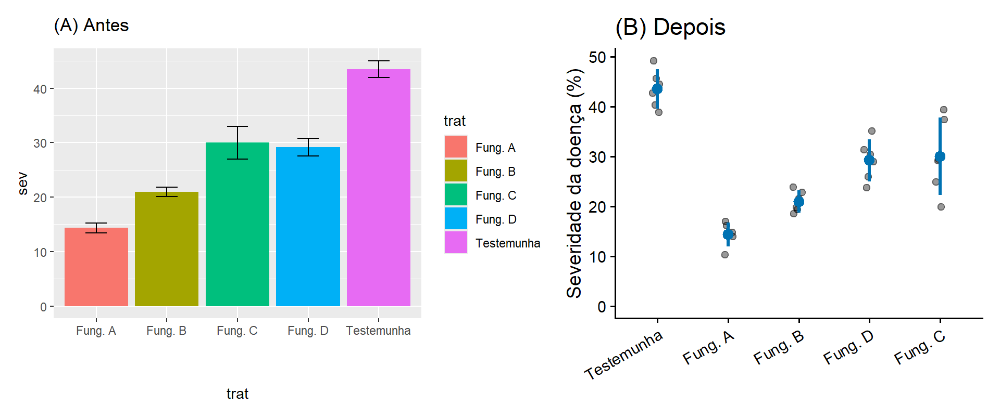
Figura 5.14: Aprimorando uma figura (dados simulados; seis parcelas por tratamento). (A) Ponto de partida: barras com erro padrão em ordem alfabética, cores redundantes, legenda desnecessária e rótulo abreviado. (B) Versão final: observações individuais, média e intervalo de confiança de 95% em uma única cor de destaque, testemunha primeiro e tratamentos em ordem de eficácia, rótulos completos e tema limpo.
DicaPesquisa revisitada: Dos dados à figura científica
Considere um experimento que compara a severidade da doença entre tratamentos.
Questão
Qual representação gráfica comunica com mais clareza a evidência experimental?
Compare várias alternativas:
tabela de médias dos tratamentos;
gráfico de barras das médias;
diagramas de caixa;
observações brutas;
observações combinadas com os efeitos estimados dos tratamentos e sua incerteza.
Para cada representação, pergunte:
Que informação está visível?
Que informação está escondida?
Que comparações são fáceis de fazer?
Que conclusão biológica a figura enfatiza?
5.17 Um fluxo de trabalho para a visualização científica
Figura 5.15: Um fluxo de trabalho prático para construir gráficos científicos.
5.18 Lista de verificação da figura
Antes de finalizar uma figura científica, pergunte:
Que questão científica a figura aborda?
O que o leitor deve notar primeiro?
As observações subjacentes estão visíveis, quando apropriado?
As comparações são fáceis de fazer?
Os eixos e as unidades estão claramente identificados?
A incerteza está representada de forma adequada?
A cor codifica informação útil?
A figura pode ser compreendida sem depender exclusivamente da cor?
Todos os elementos gráficos são necessários?
Algum aspecto da figura poderia enganar o leitor?
A figura é legível no tamanho final de publicação?
A legenda permite interpretar a figura de forma independente?
5.19 Resumo do capítulo
A visualização científica é ao mesmo tempo uma ferramenta analítica e de comunicação. Figuras eficazes revelam padrões, variação, relações e incerteza, direcionando a atenção para a evidência biológica relevante para a questão de pesquisa. As escolhas gráficas devem, portanto, ser orientadas pela estrutura dos dados e pelas comparações de interesse científico, e não por convenções ou decoração. A gramática dos gráficos fornece um arcabouço sistemático para traduzir essas decisões em visualizações reprodutíveis no R.
5.20 Conceitos-chave
Ao concluir este capítulo, você deverá ser capaz de explicar:
visualização científica;
gráfico exploratório;
gráfico explicativo;
mapeamento gráfico;
geometria;
escala;
posição;
distribuição;
variabilidade versus incerteza;
incerteza;
pequenos múltiplos;
facetas;
acessibilidade gráfica;
gramática dos gráficos.
5.21 Exercícios
5.21.1 Exercício 1. O que o gráfico revela?
Examine uma figura fornecida pelo professor sem ler sua legenda nem o texto que a acompanha.
Identifique:
as variáveis representadas;
a comparação biológica aparente;
o padrão principal;
a variação entre as observações;
qualquer informação difícil de interpretar.
5.21.2 Exercício 2. Escolhendo uma representação gráfica
Para cada questão de pesquisa, proponha uma representação gráfica adequada:
A severidade da doença difere entre cinco cultivares?
A severidade da doença está associada à temperatura?
Como a severidade da doença muda durante uma epidemia?
Quão variável é a eficácia de um fungicida entre experimentos?
A relação entre doença e produtividade difere entre ambientes?
Justifique cada escolha.
5.21.3 Exercício 3. Aprimorando uma figura
Você recebe uma figura científica mal elaborada.
Identifique problemas envolvendo:
a representação gráfica;
as escalas;
os rótulos;
as cores;
as legendas;
elementos desnecessários;
a representação da variabilidade.
Refaça a figura.
5.21.4 Exercício 4. Dos dados à figura
Usando um conjunto de dados fornecido pelo professor:
identifique a questão biológica;
selecione as variáveis necessárias para abordá-la;
construa uma visualização exploratória;
construa uma figura adequada para comunicar o resultado principal;
Escolha uma figura de um artigo recente de Fitopatologia.
Avalie:
Que questão científica a figura aborda?
A representação gráfica escolhida é adequada?
As observações individuais estão visíveis?
A variabilidade ou a incerteza está representada?
As comparações são fáceis de fazer?
A figura poderia ser simplificada?
Você a elaboraria de outra forma?
5.22 Reflexão
Uma boa figura científica não apenas mostra os dados; ela torna a evidência mais fácil de compreender.
Discuta essa afirmação usando um exemplo da Fitopatologia.
5.23 Próximos passos
A visualização permite reconhecer padrões e comunicar evidências, mas diferenças visuais, por si só, não estabelecem se um efeito observado é compatível com a variação aleatória nem com que precisão um efeito foi estimado. O próximo capítulo apresenta a inferência estatística e o raciocínio usado para passar dos dados observados às conclusões científicas.
Cleveland, W. S., e McGill, R. 1984. Graphical perception: theory, experimentation, and application to the development of graphical methods. Journal of the American Statistical Association 79:531–554. https://doi.org/10.1080/01621459.1984.10478080.
Tufte, E. R. 2001. The Visual Display of Quantitative Information. 2º ed. Cheshire, CT: Graphics Press.
Weissgerber, T. L., Milic, N. M., Winham, S. J., e Garovic, V. D. 2015. Beyond bar and line graphs: time for a new data presentation paradigm. PLoS Biology 13:e1002128. https://doi.org/10.1371/journal.pbio.1002128.